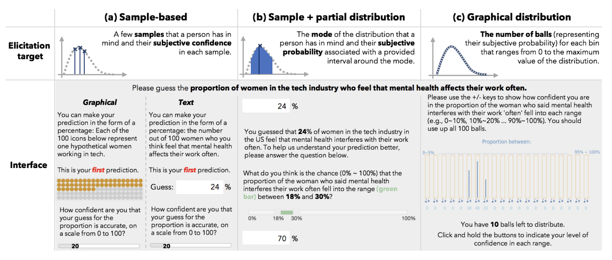

Paper: A Bayesian Cognition Approach to Improve Data Visualization
Authors: Yea-Seul Kim, Logan A Walls, Peter Krafft, Jessica Hullman
Link: Northwestern website (CHI 2019)
How I found this paper: at the data visualization talk I went to, the speaker mentioned Jessica Hullman's work, so I looked up her research and lab. The MU Collective is a "cross-institution research lab working at the intersection of information visualization and uncertainty communication."
Summary
The authors "demonstrate a Bayesian cognitive model for understanding how people interpret visualizations in light of prior beliefs, and show how this model provides a guide for improving visualization evaluation." They show (1) how using this model in a simple case indicates that people are roughly doing Bayesian inference, (2) how people don't behave consistently with their predictions for large datasets, and (3) how this can be used to evaluate visualizations.
Setup: the authors claim that because conventional visualization guidance boils down to "choose the right encodings and comparisons for your task," conventional evaluation frames the ideal user as "one who minimizes perceptual and other cognitive errors" when looking at the visualization. Of course, there's a human element to visualization——it's not just data. Psychology research has looked into this, and general purpose Bayesian models of cognition exist, but there is (until this paper) no cognition model for how people view data.
Some research background that I didn't know about before reading the paper:
- While visualizations can change people's attitudes about something, the impact of a visualization depends on the strength of one's prior beliefs
- Asking people to draw their predictions before seeing a visualization can improve their memory of the data (possibly through anchoring the data to their prior beliefs)
- Bayesian cognition exists; this basically models cognition as a Bayesian inference process, where people have prior beliefs about the world, and when they observe new data, they update their beliefs. This has been used to model object perception, causal reasoning, and knowledge generalization.
- Recent research has proposed the idea that human cognition is not exact Bayesian inference, but approximate Bayesian inference; that is, people take a small number of samples from their "belief distribution" and reason using those. This means that people can behave sub-optimally at times.
Study 1: Bayesian data interpretation
The authors were interested in the population proportion parameter "the proportion of women in tech who feel that mental health affects their work often." They elicited the participants' prior distribution, then showed them an infographic about this proportion where N = 158, then elicited their posterior distribution.
The technique used to elicit prior and posterior distributions was asking (1) what is the most probable value of their internal distribution and (2) what is the subjective probability that the parameter falls into the interval (mode +/- 0.25 * mode). This technique is least sensitive to noise from subjective uncertainty, plus it leads nicely to an analytical parameterization of a Beta distribution. See below for how they did this.
The authors computed the "normative posterior," which is basically what the posterior should be given the participant's prior and the data they were shown. 44% of participants overweighted the observations, 34% overweighted their prior, 4% were very close to the normative posterior, and 18% went in the opposite direction, having a posterior that was further from the prior than the observations were. The point of all this is that individually, participants were clearly not acting in a fully Bayesian manner, but in aggregate their collective reasoning was consistent with optimal Bayesian behaviors (evaluated by taking the KL divergence between the normative and aggregate posteriors).
Study 2: elicitation techniques
The authors were interested in how robust their design was to different elicitation techniques for the prior and posterior. Study 1 used a technique from the literature, but the authors invented their own to study this. The techniques were:
- Sample-based, graphical: show 100 icons and ask participants to highlight the number they predicted, plus a confidence from 0 to 100
- Sample-based, text: ask people for a percentage between 0 and 100, plus a confidence from 0 to 100
- Sample + partial distribution: ask people for a percentage between 0 and 100, then ask what proportion fall in the range
p +/- 0.25p - Graphical: ask people to distribute balls in a bin, creating a visual histogram

The authors were also curious about the impact of sample size; in Bayesian inference, when the sample size of the observations is large, the prior matters less. The authors therefore chose an additional dataset about Alzheimer's from NYT with N = 750,000. They also created synthetic datasets (tech with N = 720,000, Alzheimer's with N = 150) to disambiguate the impacts of sample size and domain.
It turns out that the elicitation techniques had small differences (non-overlapping confidence intervals--why is a paper about Bayesian techniques using frequentist confidence intervals?), but the differences between small datasets and large datasets were much more pronounced. Moreover, while people's behavior seemed to be consistent with a sample-based Bayesian approach for small datasets, this was not the case for large ones!
Study 3: uncertainty visualization and prior elicitation
The goal here was to evaluate the effects of (1) uncertainty visualization and (2) eliciting people's prior beliefs (is it the case that eliciting them makes people more anchored to them?). This time, the authors used a Bayesian linear regression and MCMC to learn distributions over parameters. Visualizations of uncertainty reliably reduced the log KL divergence between the elicited posteriors and normative posteriors (i.e., visualizing uncertainty helped participants get closer to what the actual posterior was). Prior elicitation also reduced log KLD, but not reliably so.
The takeaway: visualization cognition can be interpreted as a Bayesian process. There's reasonable evidence to support a hypothesis that humans are using sample-based (i.e., approximate) Bayesian inference when they're interpreting visualizations in the context of prior beliefs. A Bayesian cognitive model for data viz naturally allows the incorporation of other factors (graphical, contextual, individual, ...) that have not yet been studied.
Thoughts, connections, and questions
This paper is incredible——the authors did an excellent job bridging the gap between the seemingly unrelated subjects of data visualization, human cognition, and Bayesian inference.
Over the last few months, I've been working on a Bayesian inference research team. The Bayesian way of thinking has started to seem so natural to me, and this paper is a perfect example of why. "Update your beliefs when you get new information" is the way that we all think about the world, and so a study of how that idea applies to data visualization is super interesting to me. This intersection of HCI + visualization is not really where I want my research to go, but it is worth reading about nonetheless.
The experiment about different ways to ask people about uncertainty is interesting as well. While the authors reject the claim that people are not good at reasoning about probability, it's clear that you have to be thoughtful in asking people to describe their beliefs--especially for something as abstract as a "distribution"--for fear of introducing sampling bias. These techniques all hold up in the one-dimensional Beta distribution case, but I'm curious how you would ask people to describe e.g., two correlated parameters.
It took until study #3 for the authors to use a Bayesian analysis technique, namely a Bayesian linear regression with MCMC. I love these techniques because they pack so much information into them: once you know the posterior distributions over all the parameters, you can use them to answer so many questions. Compare this to frequentist statistical tests, where you compare one mean and another, or one proportion and another. On top of all this, if you really want the 95% confidence intervals, you can recover them from the posterior.